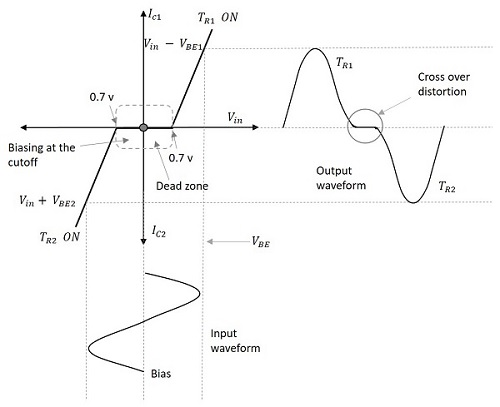

Powe Amplifier Handbook:#
Author :Hanieh Malekjafarian
Gmail: haniehmalekjf@gmail.com
Table of Contents#
1. Introduction#
2. What is an Amplifier ?#
3. What is a Power Amplifier?#
4. What are the Types of Power Amplifier?#
5. Comparison between Class A, Class B, Class AB, and Class C#
6. Applications of Power Amplifiers#
7. Difference between Voltage amplifier and Power amplifier#
8. Conclusion#
9. Resources#
1. Introduction:#
A power amplifier (PA) is a crucial electronic device used to enhance the strength of electrical signals. These devices play an essential role in various systems, including audio equipment, radio frequency (RF) transmitters, and other applications requiring high-power signals. By converting a weak electrical signal into a higher power signal, power amplifiers enable the operation of demanding components like speakers, antennas, and other high-energy devices, ensuring optimal performance across a wide range of applications.
2. What is an Amplifier ?#
Amplifiers are fundamental components in electronics, designed to increase the magnitude of voltage, current, or power of an input signal. By using an external power source, they take a weak electrical signal or waveform and reproduce a stronger version at their output without altering the signal’s original shape or characteristics. They are used in a wide range of applications, from audio systems and wireless communication devices to instrumentation and broadcasting equipment. By boosting the strength of weak signals, amplifiers ensure that information can be transmitted over long distances, processed accurately, or delivered to devices that require higher power levels.
Amplifiers are broadly classified based on their function, signal type, and frequency range.
Small-signal amplifiers are optimized for processing low-power signals, often in the range of nanovolts (10⁻⁹ volts), with minimal distortion. These amplifiers are primarily used in wireless receivers, acoustic pickups, audio tape players, and compact disc players. Small-signal amplifiers can be further categorized into:
voltage amplifiers which are the most common amplifiers used in electronic devices and increase the amplitude of the output voltage of the signal.
current amplifiers which boost the amplitude of the input current compared to the input current waveform. Voltage amplifiers are essential for audio equipment and communication systems, while current amplifiers are vital in applications requiring strong current signals, such as certain sensors and motor drivers. A key feature of small-signal amplifiers is their sensitivity, which measures the minimum input signal required to maintain a desired signal-to-noise ratio (commonly 10:1). These amplifiers are meticulously engineered to generate minimal internal noise while significantly boosting signal strength, ensuring clarity and precision.
large-signal amplifiers (power amplifiers) are designed for high-power applications. These amplifiers handle larger signals and provide the energy needed to operate speakers, antennas, and other high-power devices. Their ability to handle and deliver high-power signals makes them essential in wireless transmitters, broadcast systems, and high-fidelity (hi-fi) audio equipment. Power amplifiers stand out due to their unique role in electronics. Unlike small-signal amplifiers, which prioritize signal integrity at lower power levels, power amplifiers amplify signals to levels capable of driving high-energy devices.
3. What is a Power Amplifier?#
A power amplifier is an electronic amplifier designed to increase the magnitude of power of a given input signal with minimal aberration. The power of the input signal is boosted to a level high enough to drive output devices such as speakers, headphones, RF transmitters, and more. In contrast to small-signal amplifiers, which concentrate on boosting voltage or current, power amplifiers are engineered to deliver sufficient energy to directly drive these high-power loads. As such, they are typically used as the final block in an amplifier chain.
Before reaching a power amplifier, the input signal often needs to be pre-amplified using voltage or current amplifiers to meet a certain threshold. These pre-amplifiers optimize the signal, ensuring it is properly prepared for amplification to the required power level. Once amplified, the signal is capable of driving devices like audio system speakers or transmitting wireless signals over extended distances, making power amplifiers indispensable in applications demanding a substantial augmentation of signal strength.
You can observe the block diagram of an audio amplifier and the usage of a power amplifier below.

In this example, a microphone serves as the input source. The signal from the microphone, being too weak for direct use by the power amplifier, is first passed through a pre-amplifier that slightly increases its voltage and current. It then goes through a tone and volume control circuit, which adjusts the audio waveform for aesthetic purposes. Finally, the signal is processed by the power amplifier, which boosts it to a level sufficient to drive a speaker effectively.
Characteristics of Amplifiers:#
1. Efficiency (η):#
Efficiency is a key performance metric for power amplifiers, indicating how effectively they convert input DC power into useful AC output power. For power amplifiers, efficiency is especially important, as it determines the energy consumed relative to the energy delivered to the load. It is calculated using the formula:
Where:
\(P_{ac}\) : is the Output AC power delivered to the load.
\(P_{dc}\) : is the Input DC power consumed by the amplifier.
A higher efficiency ensures minimal energy waste and better overall performance, making it a vital parameter in high-power applications.
2. Maximum Power Handling:#
Power amplifiers are designed to handle substantial power levels. The maximum power rating specifies the highest amount of power the amplifier can safely sustain without failure. This feature is vital for ensuring reliability in demanding applications like driving large speakers or transmitting wireless signals over long distances. Proper thermal management and robust circuit design are often employed to achieve high power handling.
3. Power Amplifier Gain:#
Power amplifier gain measures the amplification provided in terms of power. It is typically expressed in decibels (dB) and calculated as: $\( Gain(dB) = 10 \times\ log_{10}\left(\frac{P_{out}}{P_{in}}\right) \)$
Where:
\( P_{out} = V_{out} \times I_{out} \) : is the output power of the amplifier.
\( P_{in} = V_{in} \times I_{in}\) : is the input power of the amplifier.

It is significant to remember that a power amplifier’s gain does not remain constant across all frequencies. It is based on the frequency of the input signal and the frequency response of the amplifier. Hence a power amplifier’s gain is often stated over a range of frequencies, and the frequency response of the amplifier is illustrated by a frequency response curve.
4. Distortion:#
Distortion refers to deviations in the output waveform from the input waveform. These deviations can result in reduced signal fidelity, affecting the quality of audio or transmitted signals. Common causes include non-linearity in the amplifier’s components and overloading.
To minimize distortion, power amplifiers often employ:
Negative Feedback: Reduces harmonic and intermodulation distortion
Class AB Designs: Balance efficiency and linearity to maintain signal integrity
Low distortion is especially critical in audio and communication systems where clarity is paramount.
5. Impedance Matching :#
Impedance matching ensures efficient power transfer between the amplifier and the load (speakers or antennas). Mismatched impedance can cause signal reflections, reduced efficiency, and potential damage to the amplifier. Power amplifiers are designed to match the impedance of their output devices, using transformer coupling or circuit adjustments as needed.
6. Amplifier Configurations:#
Most power amplifiers are built using Bipolar Junction Transistors (BJTs), with the common-emitter (CE) configuration being the standard choice. This setup offers high gain and reliable performance, making it ideal for a wide range of applications.
4. What are the Types of Power Amplifier?#
Power amplifiers can be classified based on various factors. Let’s explore some common classifications:
Classification Based on Frequencies:#
1. Audio Power Amplifiers:#
These amplifiers are designed to amplify audio signals to levels sufficient for driving speakers or headphones. They are commonly used in applications like speakers, home theater systems, televisions, and mobile phones, where they boost weak audio signals to make them louder. Audio power amplifiers can range from a few milliwatts (such as in headphone amplifiers) to hundreds of watts (such as in Hi-Fi or Home theatre systems). The key considerations for selecting an audio amplifier include power output, distortion, frequency response, and impedance matching, which ensure optimal sound quality and performance.
2. Radio Frequency (RF) Power Amplifiers:#
Radio Frequency power amplifiers (RFPA) are used to amplify weak radio frequency signals, transforming them into strong signals for long-distance transmission. They are crucial in communication systems such as cell phones, radio transmitters, radar systems, and satellite communications. Since RF amplifiers significantly impact system effectiveness and range, they are essential for reliable transmission. The design and selection of RF power amplifiers depend on factors like power output, efficiency, linearity, and frequency range, requiring a solid understanding of circuit theory and semiconductor technology. (Wireless transmissions require modulated waves to be sent over long distances through air. The signals are transmitted using antennas and the range of transmission depends on the magnitude of power of signals fed to the antenna.
For wireless transmissions like FM broadcasting, antennas require input signals at thousands of kilowatts of power. Here, Radio Frequency Power amplifiers are employed to increase the magnitude of power of modulated waves to a level high enough for reaching the required transmission distance)
3. Video Frequency Power Amplifiers:#
These amplifiers are used to amplify signals in the video frequency range (typically 30 Hz to 10 MHz). They are crucial in video transmitters, televisions, and other visual media devices, where they ensure that video signals are transmitted clearly and with adequate power. Video frequency amplifiers are designed to handle AC signals that vary in frequency, making them essential for applications where signal quality is paramount.(These amplifiers handle video signals, which typically include a wide range of frequencies from DC to several MHz. They are used in video displays, projectors, and video transmission systems.)
4. DC Power Amplifiers:#
DC power amplifiers are electrical components that amplify a DC input signal to produce a higher-power DC output signal. Typically, these amplifiers consist of three stages: an input stage, an amplification stage, and an output stage. The input stage receives the DC signal and adjusts it to an appropriate level for amplification. The amplification stage, often utilizing transistors or vacuum tubes, increases the signal’s power. Finally, the output stage generates the amplified DC signal and serves as a load for the amplifier. These amplifiers are widely used in commercial, academic, and military applications, including powering electric motors, radio communications, radar systems, laser systems, and other devices that require a stable DC signal.
(DC power amplifiers are used to amplify the power of a PWM (Pulse Width Modulated) signals. They are used in electronic control systems which need high power signals to drive motors or actuators. They take input from microcontroller systems, increase its power and feed the amplified signal to DC motors or Actuators.)
Classification Based the Period of Conduction:#
Class A : The period of conduction is for a total \(360 \degree\) (full cycle)
Class B : The period of conduction is for \(180 \degree \) only (half cycle)
Class AB : The period of conduction is greater than \(180 \degree \) but less than \(360 \degree \) (in between class A and class B).
Class C : The period of conduction is for less than \(180 \degree \).

We will discuss classes of power amplifier in the next section.
Power Amplifier Classes:#
There are multiple ways of designing a power amplifier circuit. The operation and output characteristics of each of the circuit configurations differs from one another.
To differentiate the characteristics and behavior of different power amplifier circuits, Power Amplifier Classes are used in which, letter symbols are assigned to identify the method of operation.
They are broadly classified into two categories.
Power amplifiers designed to amplify analog signals come under A, B, AB or C category.
Power amplifiers designed to amplify Pulse Width Modulated (PWM) digital signals come under D, E, F etc.
The most commonly used power amplifiers are the ones used in audio amplifier circuits and they come under classes A, B, AB or C. So, let’s take a look at them in detail.
Class A Power Amplifier:#
The Class A power amplifier is one of the simplest and most widely used amplifier configurations, primarily known for its high linearity. It operates by using a single transistor in a common-emitter configuration to produce an inverted output. A defining feature of the Class A amplifier is that the transistor conducts throughout the entire cycle of the input signal, meaning it is always on, during both the positive and negative halves of the input waveform. To ensure this, the operating point (Q-point) is set at the center of the load line, keeping the transistor in the active region throughout the entire signal cycle and minimizing distortion. This constant conduction leads to several important outcomes.

On the positive side, it ensures that the amplifier has minimal distortion because there is no switching between transistors or any crossover distortion. As a result, the output signal closely follows the input, making Class A amplifiers particularly suitable for applications where high signal fidelity is essential, such as audio amplification.
However, this continuous conduction also comes with significant drawbacks. Since the transistor is always active, it leads to low efficiency, typically around 20-30%. A large portion of the energy is dissipated as heat rather than being used to amplify the signal, which can cause the amplifier to generate a lot of heat.
Despite these drawbacks, the Class A amplifier is ideal when signal purity is the highest priority. The amplifier can produce a high-amplitude output that accurately represents the input signal. In fact, it’s considered one of the most linear amplifier designs, meaning the output waveform is a close match to the input, with little to no distortion, even during the negative half of the signal cycle.
Class A amplifiers are generally used for low to moderate power applications, such as audio systems and radio transmitters, where high signal integrity is required over efficiency. Operating at relatively low power levels—often just a few watts—they are unsuitable for high-power applications without specialized cooling mechanisms. These amplifiers typically operate within a voltage range and rely on power transistors to handle the high currents required for amplification. In some configurations, a single power transistor is used for simplicity, while in others, pairs of transistors share the load current, enhancing performance and reliability.
Consider the Class A amplifier circuit below.
import schemdraw
import schemdraw.elements as elm
with schemdraw.Drawing() as d:
# Input Voltage Source
V = d.add(elm.SourceSin().up().label('$V_{in}$'))
d.add(elm.Line().length(1))
# Capacitor C_in
A = d.add(elm.Capacitor().right().label('$C_{in}$').dot())
d.add(elm.Line())
# Transistor (BJT NPN)
Q1 = d.add(elm.BjtNpn(circle=True).anchor('base'))
d.add(elm.Line().down().length(1 / 3).at(Q1.emitter).dot())
# Resistor R_E
RE = d.add(elm.Resistor().label('$R_E$'))
d.add(elm.Line().right().at(RE.start).length(1))
d.add(elm.Capacitor().down().label('$C_E$', loc='bot'))
d.add(elm.Line().left().length(1))
d.add(elm.Ground())
# Resistor R_2
d.add(elm.Line().down().length(1).at(A.end))
d.add(elm.Resistor().label('$R_2$', loc='bot'))
# Connection between Voltage Source and Emitter Resistor
d.add(elm.Line().at(V.start).right().to(RE.end))
# Resistor R_C and Voltage Source V_CC
d.add(elm.Line().up().length(1 / 3).at(Q1.collector).dot())
RC = d.add(elm.Resistor().label('$R_C$', loc='bot'))
d.add(elm.Vdd().label('$V_{CC}$'))
# Resistor R_1
d.add(elm.Line().up().length(1).at(A.end))
d.add(elm.Resistor().label('$R_1$'))
d.add(elm.Line().right().tox(RE.start))
# Capacitor C_c
d.add(elm.Capacitor().right().at(RC.start).label('$C_{c}$').dot().label('$V_{out}$', loc='right'))
d.draw()
Circuit Analysis:#
Let’s take a closer look at what each component does in the circuit.
\(R_1\) and \(R_2 \) :#
These two resistors form a voltage divider that provides a steady voltage to the transistor’s base (\(V_B\)), ensuring a stable operating point (Q-point) for the transistor. This stability is critical for consistent performance, as it minimizes variations caused by changes in temperature or the transistor’s current gain (𝛽).
How it works?#
As seen in the circuit, \(R_1\) and \(R_2\) are connected in series between the supply voltage (\(V_{CC}\)) and ground, dividing the supply voltage to set the voltage at the transistor base. The base voltage is determined by:
This equation shows that \(V_B\) depends primarily on \(V_{CC}\) and the resistor values, rather than the transistor itself.
Since the transistor’s current gain (𝛽) can vary significantly between devices or change with temperature, without the voltage divider, the base current (\(I_B\)) could significantly alter the base voltage. However, the voltage divider bias ensures that \(V_B\) is set primarily by \(R_1\) and \(R_2\), and \(V_{CC}\), as these resistors provide a low-impedance path that is largely unaffected by the small base current. This minimizes the impact of 𝛽 variations and helps maintain the Q-point at the desired location on the load line, ensuring the transistor remains in the active region for proper amplification.
The voltage divider biasing ensures that the base voltage (\(V_B\)) is set correctly, but to keep the transistor in the active region and achieve proper amplification, the base-emitter voltage (\(V_{BE}\)) is also critical. The base-emitter voltage is the difference between the base voltage (\(V_B\)) and the emitter voltage (\(V_E\)) , and it typically needs to be around 0.7V for a silicon transistor. For the transistor to conduct and amplify signals properly, the following relationship must hold: $\( V_B - V_E \approx V_{BE} \)$ In other words, the voltage at the base relative to the emitter should be around 0.7V for silicon transistors. This ensures that the transistor stays in the active region.
If \(V_B\) is too low compared to \(V_E\) , \(V_{BE}\) would be insufficient to turn the transistor on, and the transistor would enter cutoff (no conduction).
If \(V_B\) is too high compared to \(V_E \) , \(V_{BE} \) could exceed the ideal range, causing the transistor to saturate (maximum conduction), which distorts the signal.
Thus, the proper setting of \(V_B \) via the voltage divider also indirectly ensures that \(V_{BE} \) remains stable, keeping the transistor in the active region for amplification.
\(C_{in}\) and \(C_c \) :#
these two capacitores are called Coupling Capacitors. \(C_{in}\) Blocks any DC component in the input signal, allowing only the AC signal to pass through to the transistor’s base. This ensures the transistor operates correctly without being affected by external DC voltages, otherwise it could alter the transistor’s bias point and lead to improper operation. Similarly, \(C_c\) Blocks the DC voltage at the transistor’s collector from reaching the load, ensuring that only amplified AC signal is delivered to the output. Whithout \(C_c\), the DC bias voltage could damage sensitive components in the load.
\(C_E\) :#
This capacitor is called the Bypass Capacitor. It is connected across the emitter resistor (\(R_E\)) to bypass or eliminate the AC voltage drop across \(R_E\). By effectively removing \(R_E\) from the circuit for AC signals, \(C_E\) prevents \(R_E\) from reducing the voltage gain of the amplifier. This increases the overall voltage gain for AC signals, while \(R_E\) still provides stability and biasing for DC operation.
How it works?#
Capacitors allow AC signals to pass while blocking DC signals because their impedance decreases with increasing frequency: $\( Z_C = \frac {1}{2\pi fC} \)\( For low-frequency AC signals, the capacitor’s impedance is low, allowing the signal to pass. For DC (\) f = 0 $) , the impedance is effectively infinite, blocking the DC component.
\(R_E\) :#
This is the Emitter Resistor, which plays a critical role in providing stability to the circuit through negative feedback. It helps maintain a steady emitter current (\(I_E\)) by compensating for changes in temperature or transistor β (current gain).
How it works?#
When the emitter current (\(I_E\)) increases, the voltage across \(R_E\) (\(V_E = I_E \cdot R_E\)) also increases. This, in turn, reduces the base-emitter voltage (\(V_{BE} = V_B - V_E\)), which decreases the base current (\(I_B\)) and stabilizes \(I_E\). This self-regulation ensures that the circuit remains stable even when subjected to variations in temperature or transistor gain (𝛽).
Additionally, \(R_E\) improves the circuit’s linearity by limiting excessive changes in the transistor’s current, which helps maintain accurate signal amplification. For AC signals, \(R_E\) is effectively bypassed by the bypass capacitor (\(C_E\)), which allows for a higher voltage gain without sacrificing the stability provided by \(R_E\) in the DC operating condition.
\(R_C\) :#
This is the Collector Resistor, which determines how much voltage drops across it for a given collector current. This voltage drop converts the amplified current signal from the transistor into a corresponding amplified voltage signal, which is developed across \(R_C\). The value of \(R_C\) directly impacts the amplifier’s performance.
If \(R_C \) is too large, it reduces the available voltage swing, potentially causing signal clipping at the extremes of the waveform .
if \(R_C \) is too small, the voltage gain may be insufficient for the desired amplification.
How it works? #
The amplified signal voltage is developed across \(R_C\) using Ohm’s Law: $\( V_{RC} = I_C \cdot R_C \)\( As the input signal changes, the transistor modulates the collector current (\)I_C\(). This variation in \)I_C\( causes a corresponding change in the voltage drop across \)R_C\( (\)V_{RC}\().Since the collector voltage (\)V_C\() is: \)\( V_C = V_{CC} - V_{RC} \)\( any change in \)V_{RC}\( alters \)V_C\(, creating the amplified output signal. In essence, \)R_C$ translates variations in current (caused by the transistor’s operation) into proportional voltage variations, forming the output signal.
Summery of Circuit Analysis:#
Component |
Function |
|---|---|
\(R_1\) and \(R_2\) |
Form a voltage divider to provide a stable base voltage (\(V_B\)), ensuring a consistent Q-point and minimizing variations caused by transistor \(\beta\) or temperature. |
\(C_{in}\) and \(C_c\) |
Coupling capacitors that block DC components while allowing AC signals to pass, ensuring proper biasing and preventing DC interference with input/output. |
\(C_E\) |
Bypass capacitor that removes \(R_E\)’s influence for AC signals, increasing voltage gain while maintaining stability for DC operation. |
\(R_E\) |
Emitter resistor that stabilizes the circuit by providing negative feedback and compensating for changes in transistor \(\beta\) or temperature . |
\(R_C\) |
Collector resistor that converts amplified current into voltage, determining voltage gain and output signal characteristics. |
How the circuit works?#
In a single-stage amplifier (this circuit only contains one transistor), When we apply the biasing in such a way that the output current will flow for the entire cycle of input signal, the transistor amplifies the input signal, and the phase shift between the input and output signals is \(180\degree \ \). This means that when the input signal increases, the output signal decreases, and the other way around. the behavior can be analyzed in terms of the positive half-cycle and the negative half-cycle of the input signal.
When the input signal is applied, a small base current (\(I_B\)) flows into the transistor’s base. From the supply voltage \(V_{CC} \ \), the collector current (\(I_C\)) is generated, and it is proportional to \(I_B\) by the current gain 𝛽 : $\( \quad I_C = \beta I_B \quad \)$
Since the base current and collector current are proportional, when the base current \(I_B\) increases, the collector current \(I_C\) also increases. You can express this relationship as:
The output voltage \(V_{CE}\) (collector-emitter voltage) is given by:
So, as the collector current \(I_C \) increases (due to an increase in \(I_B \)), the voltage drop across the collector resistor and emitter bypass capacitor increases, causing (\(V_{CE}\)) to decrease.
For the Positive Half Cycle of Input, the base current increases and based on the realations above we have:
\[ I_B \uparrow \quad \Longrightarrow \quad I_C \uparrow \quad \Longrightarrow V_{CE} \downarrow \]A decrease in \(V_{CE}\) corresponds to a negative voltage at the output, producing the negative half of the amplified signal. So, when the input signal is in its positive half-cycle, the transistor conducts more, which reduces \(V_{CE}\) and results in a negative output.
For the Negative Half Cycle of Input, the base current decreases and based on the realations we discussed earlier exactly the oposite of what happened in positive half cycle happens: $\( I_B \downarrow \quad \Longrightarrow \quad I_C \downarrow \quad \Longrightarrow V_{CE} \uparrow \)\( An increase in \)V_{CE}\( corresponds to a more positive voltage at the output, producing the positive half of the amplified signal. So, during the negative half-cycle of the input signal, the transistor conducts less, increasing \)V_{CE}$ and resulting in a positive output.
Let’s take a look at an example Class A amplifier circuit. As it is shown in the figure, the output voltage is amplified and it has a \(180 \degree\) phase shift.
import numpy as np
import matplotlib.pyplot as plt
from PySpice.Spice.Netlist import Circuit
from PySpice.Unit import *
from PySpice.Probe.Plot import plot
from PySpice.Logging.Logging import setup_logging
# Setup logging (optional)
setup_logging()
# Create circuit
circuit = Circuit("Common Emitter Amplifier")
# Power supply
circuit.V(1, 'Vcc', circuit.gnd, 5@u_V)
# Input AC signal
circuit.SinusoidalVoltageSource("Vin", 'in', circuit.gnd, amplitude=1@u_mV, frequency=1@u_kHz)
# Resistors
circuit.R(1, 'Vcc', 'base', 33@u_kΩ) # Base resistor
circuit.R(2, 'base', circuit.gnd, 4.7@u_kΩ) # Voltage divider
circuit.R(3, 'Vcc', 'collector', 4.7@u_kΩ) # Collector resistor
circuit.R(4, 'emitter', circuit.gnd, 1@u_kΩ) # Emitter resistor
# Capacitors
circuit.C(1, 'in', 'base', 10@u_uF) # Input coupling capacitor
circuit.C(2, 'emitter', circuit.gnd, 10@u_uF) # Bypass capacitor
circuit.C(3, 'collector', "out", 10@u_uF) # Output coupling capacitor
# Transistor
circuit.BJT(1, 'collector', 'base', 'emitter', model='npn')
circuit.model('npn', 'npn', bf=80, vaf=100@u_V, is_=1e-14, cjc=pico(5), rb=100)
# Ensure 'out' node is properly connected
circuit.R('load', "out", circuit.gnd, 1@u_kΩ) # Load resistor to ensure 'out' is not floating
# Simulation setup
simulator = circuit.simulator(temperature=25, nominal_temperature=25)
# Run a transient analysis
analysis = simulator.transient(step_time=0.01@u_ms, end_time=7@u_ms)
# Scale voltage to kilovolts
vin_kV = np.array([float(voltage) / 1000 for voltage in analysis['in']])
vout_kV = np.array([float(voltage) / 1000 for voltage in analysis['out']])
# Plot the results
plt.figure(figsize=(10, 6))
plt.title("Common Emitter Amplifier - Transient Analysis (Voltage in kV)")
plt.plot(analysis.time, vin_kV, label='Input Voltage (Vin) [kV]')
plt.plot(analysis.time, vout_kV, label='Output Voltage (Vout) [kV]')
plt.xlabel('Time [s]')
plt.ylabel('Voltage [kV]')
plt.legend()
plt.grid()
plt.show()
---------------------------------------------------------------------------
ModuleNotFoundError Traceback (most recent call last)
Cell In[2], line 3
1 import numpy as np
2 import matplotlib.pyplot as plt
----> 3 from PySpice.Spice.Netlist import Circuit
4 from PySpice.Unit import *
5 from PySpice.Probe.Plot import plot
ModuleNotFoundError: No module named 'PySpice'
Summery:#
Positive half cycle in input → Negative half cycle is obtained at output
Negative half cycle in input → Positive half cycles is obtained at output
Characteristics of Class A Power amplifier :#
For the purpose of analysis, we assume the static output characteristics to be equidistant for equal increments of the input excitation, meaning that the changes in \(I_C\) are the same as \(I_B\) . When the applied input signal is a sinusoidal signal the base current varies sinusoidally and causes the transistor to amplify these sinusoidal variations.
Output current flow for entire cycle.
Operation of amplifier restricted to smaller central region → linear region.
Output is same as that of input since the Q-point is exactly at the centre.
AC output power per active transistor is less as compared to Class B and Class C.
Overall efficiency η = AC Power delivered to the load/DC input power (\(η= \frac{P_{ac}}{P_{dc}}\)), 25% for directly coupled Class A Power amplifier.
Since the amplified output signals are also in the form of sine wave, The power output of this circuit is: $\( P = V_{CC}I_C = I_C^{2}R_C \)\( \)\( P = \frac {V_c^{2}}{R_C} = (\frac {V_m}{\sqrt 2})^2 \times \frac {1}{R_C} \)\( \)\( P = \frac {V_m^2}{2R_c} \)$
Class B Power Amplifier:#
The Class B power amplifier is a commonly used configuration, known for balancing efficiency and performance. The Class B push-pull amplifier uses the same circuit design as the Class A push-pull amplifier, except that the transistors are biased at cutoff, meaning they conduct only during half of the input signal cycle, unlike Class A amplifiers that conduct throughout the entire input cycle. In the Class B amplifier, two NPN transistors receive the same input signal, which is equal in magnitude but opposite in phase. This results in each transistor conducting for half of the input signal: one for the positive half-cycle and the other for the negative half-cycle. The operating point is set at the collector cutoff voltage, causing the transistor to be off when the input signal is zero. When the signal is applied, only the positive half-cycle is amplified at the output. This “push-pull” operation improves efficiency, as each transistor remains off for half the time, reducing power loss.
However, this design introduces a challenge known as “crossover distortion”. When the input signal transitions between positive and negative cycles, a slight gap can occur due to the transistors turning on and off. While this can affect the fidelity of the output signal, it is usually addressed with clever circuit techniques that minimize distortion.
One of the key advantages of the Class B amplifier is its efficiency. Since the transistors are only active for half of the input cycle, the energy dissipated as heat is significantly lower compared to Class A amplifiers. This makes Class B amplifiers more suitable for higher power applications, like driving loudspeakers in audio systems or powering transmitters and industrial uses.
On the downside, the focus on efficiency means the output may not be as linear as Class A amplifiers. Nevertheless, by using complementary transistors and carefully optimizing the design, the Class B amplifier can deliver a clear and powerful output signal with minimal distortion.
Overall, the Class B power amplifier strikes a practical balance, making it a popular choice for applications that require good efficiency without compromising too much on performance.
A push-pull class B power amplifier’s construction is illustrated in detail in the figure below.
import schemdraw
from schemdraw import elements as elm
with schemdraw.Drawing() as d:
# Transformer Tr1 with center tap on the secondary
x = d.add(elm.Transformer(t1=4, t2=4).tap(name='B', pos=2, side='secondary').label('$T_{r1}$'))
# Input connections to the transformer primary
A = d.add(elm.Line().length(1).up().at(x.p1))
d.add(elm.Line().left().dot(open=True))
d.add(elm.Line().length(1).down().at(x.p2))
d.add(elm.Line().left().dot(open=True))
d.add(elm.Gap().toy(A.end).label(['↓', 'input', '↑']))
# NPN transistor T1 connected to transformer secondary
d.add(elm.Line().up().length(1).at(x.s1))
d.add(elm.Line().right())
Q1 = d.add(elm.BjtNpn(circle=True).anchor('base').label('T1'))
d.add(elm.Line().up().length(1 / 3).at(Q1.collector))
d.add(elm.Line().right())
d.add(elm.Line().down().toy(x.p1))
d.add(elm.Line().length(1 / 3).right())
# Transformer Tr2 for output stage
t = d.add(elm.Transformer(t1=4, t2=4).flip()
.tap(name='A', pos=2, side='primary').label('$T_{r2}$'))
# NPN transistor T2 connected to Tr1 secondary
d.add(elm.Line().down().length(1).at(x.s2))
d.add(elm.Line().right())
Q2 = d.add(elm.BjtNpn(circle=True).anchor('base').flip().label('T2'))
d.add(elm.Line().down().length(1 / 3).at(Q2.collector))
d.add(elm.Line().right())
d.add(elm.Line().up().toy(t.p1))
d.add(elm.Line().length(1 / 3).right())
# Output speaker and connections
d.add(elm.Line().up().length(2).at(t.s2))
d.add(elm.Line().right().length(1))
d.add(elm.Line().down().length(2.5))
d.add(elm.Speaker().right())
d.add(elm.Line().down().length(2.58))
d.add(elm.Line().left().length(1))
d.add(elm.Line().up().toy(t.s1))
# Emitter connections and biasing
d.add(elm.Line().down().at(Q1.emitter).toy(Q2.emitter))
d.add(elm.Arrow().right().at(x.B).length(0.75).reverse())
# Resistor R1 and ground connection
B = d.add(elm.Resistor().label('$R_1$', loc='bot').length(d.unit / 1.5))
d.add(elm.Line().length(d.unit / 6))
d.add(elm.Ground())
# Battery and additional circuit elements
C = d.add(elm.Battery().reverse())
d.add(elm.Arrow().right().to(t.A))
d.add(elm.Line().up().at(B.start).length(0.70))
d.add(elm.Resistor().label('$R_2$').right())
d.add(elm.Line().tox(C.end))
d.add(elm.Line().down().toy(C.end))
Circuit Analysis:#
Let’s analyse the functionality of each component in the Class B Power Amplifier circuit.
Input Transformer (\(T_{r1}\)):#
The input transformer is used to split the input signal into two phases. This is essential for the push-pull configuration, which requires two out-of-phase signals to drive the two transistors \(T_1\) and \(T_2\) effectively.
How it works?#
\(T_{r1}\) is a center-tapped transformer, meaning its secondary winding (the output coil) has a middle point called the center tap. This center tap serves as a reference point and is connected to ground, providing a reference voltage of \(0 \mathrm{V}\). This allows the two halves of the secondary winding to generate equal but opposite voltages relative to the center tap.
The input signal is fed to the primary winding of \(T_{r1}\), which transfers the signal to the secondary winding through electromagnetic induction. The center tap divides the secondary winding into two symmetrical halves. These halves produce voltages that are 180° out of phase: when one half generates a positive voltage, the other generates a negative voltage.
The two ends of the secondary winding are connected to the bases of transistors \(T_1\) and \(T_2\). \(T_1\) receives the positive phase of the input signal, while \(T_2\) receives the negative phase. The center tap is connected to the shared emitter (or ground), ensuring that both transistors are driven with signals that are equal in magnitude but opposite in phase. This phase opposition is crucial for the push-pull operation, as it ensures that the two transistors work together to amplify the entire input signal with minimal distortion.
Transistors (T1 and T2):#
These are the active components of the amplifier. \(T_1\) and \(T_2\) are configured in a push-pull arrangement, allowing the transistors to amplify both halves of the input signal, thereby improving efficiency and reducing distortion. When \(T_1\) conducts, \(T_2\) is off, and in reverse, ensuring that both halves of the signal are amplified.
The transistors used in this type of transformer push-pull amplifier circuit are both NPN transistors with their emitter terminals connected together. In this configuration, the load current is shared between the two power transistors as it decreases in one device and increases in the other throughout the signal cycle. This results in both halves of the output waveform swinging from zero to twice the quiescent current, reducing dissipation and almost doubling the efficiency of the amplifier to around 70%. However, the output signal does contain a small degree of distortion because each transistor only amplifies 50% of the input signal. Using a push-pull design, which amplifies the input signal in opposite phases using two complementary transistors, helps minimize this distortion.
The primary of the output transformer \(T_{r2}\) supplies the collectors with the \(V_{CC}\),while the emitters are shorted.
How it works?#
As mentioned, the emitters of both transistors are connected together, and this common point is grounded.
No Input Signal: Both transistors are biased just at the edge of conduction (cutoff point), meaning they are both turned off. This biasing is achieved through resistors \(R_1 \) and \(R_2 \), which ensure that without an input signal, the base-emitter junction (\(V_{BE}\)) is just below the threshold voltage required for conduction (around 0.7V for silicon transistors).
Positive Half-Cycle (Transistor \(T_1\) Conducts): During the positive half of the input signal, the base of \(T_1\) receives a positive voltage through the center-tapped transformer \(T_{r1}\). This positive voltage forward-biases the base-emitter junction of \(T_1\)(\(V_{BE}\) > 0.7V), causing \(T_1 \) to conduct. As \(T_1 \) conducts, current flows from the collector to the emitter, and this current increases the voltage across the primary winding of the output transformer \(T_{r2}\). During this time, \(T_2 \) remains off because its base receives a negative voltage, driving it further into cutoff.
Negative Half-Cycle (Transistor \(T_2 \) Conducts): During the negative half of the input signal, the base of \(T_2 \)receives a positive voltage through the center-tapped transformer \(T_{r1}\). This positive voltage forward-biases the base-emitter junction of \(T_2 \)(\(V_{BE}\) > 0.7V), causing \(T_2 \) to conduct. As \(T_2 \) conducts, current flows from the collector to the emitter, and this current increases the voltage across the primary winding of the output transformer \(T_{r2}\). During this time, \(T_1 \) is off because its base receives a negative voltage, driving it further into cutoff.
★ Push-Pull Effect: The push-pull configuration ensures that each transistor only amplifies one half of the input signal cycle. The two half-cycles are combined in the primary winding of the output transformer \(T_{r2}\) to produce a complete amplified output signal. This configuration improves efficiency and reduces distortion compared to single-ended amplifiers.

Resistors (R1 and R2):#
These resistors are used for biasing the transistors. They set the operating point (Q-point) of the transistors at cutoff (as shown in figure above) , ensuring they operate in the correct region for linear amplification. Proper biasing is crucial for minimizing distortion and achieving accurate signal amplification.
How it works?#
\(R_1 \) and \(R_2 \) are connected to the bases of the transistors through the center-tapped secondary winding of the input transformer \(T_{r1}\). These resistors provide a return path for the base current of the transistors, ensuring that the base-emitter junctions are correctly biased.
No Input Signal: Both transistors are biased just at the edge of conduction (cutoff point) due to the small base biasing provided by \(R_1 \) and \(R_2 \). The resistors ensure that the transistors do not conduct without an input signal, preventing any power dissipation during idle.
With Input Signal: The bases of \(T_1\) and \(T_2 \) receive opposite phases of the input signal due to the center-tapped transformer.
Positive Half-Cycle: When a positive half-cycle of the input signal is applied, \(T_1\)’s base goes positive, the base-emitter junction of \(T_1\) becomes forward-biased, causing it to conduct , while \(T_2\) remain off. \(R_1 \) ensures that the base-emitter voltage (\(V_{BE}\)) is appropriate for conduction by providing a return path for the base current of \(T_1\) .
Negative Half-Cycle: During the negative half-cycle, the roles of the transistors are reversed. The base-emitter junction of \(T_2 \) becomes forward-biased, causing it to conduct and increasing its collector current, while \(T_1\) receives a negative voltage, turning it off. \(R_2 \) ensures correct biasing for \(T_2\) to conduct during its phase.
This alternating conduction ensures that each transistor amplifies its respective half of the input signal, combining the output in the primary winding of the output transformer.
\(T_{r2}\):#
The output transformer ( \(T_{r2}\) ) is a crucial component in the Class B push-pull amplifier. Its primary function is to combine the signals from the two transistors (\(T_1 \) and \(T_2 \)) and match the impedance of the amplifier to the load (in this case, a speaker). By matching the amplifier’s impedance with the speaker, the transformer ensures efficient power transfer, minimizes power loss, and improves the overall efficiency of the amplifier. It also provides electrical isolation between the amplifier and the load, protecting the amplifier from potential damage due to faults or variations in the load.
How it works?#
The output transformer takes the out-of-phase signals from the two transistors and combines them into a single, amplified output signal. During the positive half-cycle of the input signal, \(T_1\) conducts, and the current flows through one half of the primary winding of \(T_{r2}\). During the negative half-cycle, \(T_2\) conducts, and the current flows through the other half of the primary winding. “The alternating currents in both halves of the primary winding generate a magnetic field in the core, inducing a voltage in the secondary winding.
The alternating currents in both halves of the primary winding generate a magnetic field in the core, which induces a voltage in the secondary winding. This energy transfer occurs through the magnetic field, not via a direct electrical connection. As a result, the transformer isolates the electrical circuits on either side. This isolation prevents any DC bias or noise from the primary circuit from reaching the secondary circuit. Only the AC signal is transferred through the magnetic field, providing safety by blocking high voltages from the primary side from reaching the secondary side. It also protects sensitive components in the secondary circuit from potential faults or surges in the primary circuit.
Summary of Circuit Analysis:#
Component |
Function |
|---|---|
\(T_{r1}\) (Input Transformer) |
Splits the input signal into two phases for push-pull operation, providing phase opposition for transistors \(T_1\) and \(T_2\). |
\(T_1\) and \(T_2\) (Transistors) |
Amplify both halves of the input signal in a push-pull configuration, increasing efficiency and reducing distortion. |
\(R_1\) and \(R_2\) (Resistors) |
Bias the transistors at the cutoff point to prevent conduction without an input signal and ensure correct base-emitter voltage for conduction. |
\(T_{r2}\) (Output Transformer) |
Combines the out-of-phase signals from \(T_1\) and \(T_2\) into a single, amplified output signal. Matches impedance between amplifier and load. |
How a Class B Power Amplifier Works?#
As discudssed, two transistors are used in a push-pull configuration in class B. Each transistor amplifies only one half of the input signal (positive or negative) while the other transistor remains off.
Operation without an input signal: When no input signal is applied, both transistors are biased at cutoff, In this state:
No base current flows.
No collector current is generated.
The amplifier consumes no power, making it highly efficient in the absence of an input signal.
Operation with an input signal:
Positive Half-Cycle: During the positive half-cycle of the input signal:
The base current \(I_B\) of transistor \(T_1\) increases, driving \(T_1\) into conduction.
The collector current \(I_C\) of \(T_1\) rises, causing a voltage drop across the load.
The output voltage reflects the amplified positive half-cycle of the input signal. Meanwhile, transistor \(T_2\) remains off. $\( I_B(T_1) \uparrow \quad \Longrightarrow \quad I_C(T_1) \uparrow \quad \Longrightarrow V_{out} \uparrow \)$
Negative Half-Cycle: During the negative half-cycle of the input signal:
The base current \(I_B\) of transistor \(T_2\) increases, driving \(T_2\) into conduction.
The collector current \(I_C\) of \(T_2\) rises, generating a voltage drop across the load in the opposite polarity.
The output voltage reflects the amplified negative half-cycle of the input signal. Meanwhile, transistor \(T_1\) remains off. $\( I_B(T_2) \uparrow \quad \Longrightarrow \quad I_C(T_2) \uparrow \quad \Longrightarrow V_{out}\downarrow \)$
The output voltage is the sum of the positive and negative half-cycles amplified by \(T_1\) and \(T_2\), respectively. This “push-pull” effect produces a full amplified output signal, which is a continuous sine wave.
Cross Over Distortion:#
In the push-pull configuration, the two identical transistors get into conduction, one after the other and the output produced will be the combination of both.
When the signal changes or crosses over from one transistor to the other at the zero voltage point, it produces an amount of distortion to the output wave shape. For a transistor in order to conduct, the base emitter junction should cross 0.7v, the cut off voltage. The time taken for a transistor to get ON from OFF or to get OFF from ON state is called the transition period.
At the zero voltage point, the transition period of switching over the transistors from one to the other, has its effect which leads to the instances where both the transistors are OFF at a time. Such instances can be called as Flat spot or Dead band on the output wave shape.

The above figure clearly shows the cross over distortion which is prominent in the output waveform. This is the main disadvantage. This cross over distortion effect also reduces the overall peak to peak value of the output waveform which in turn reduces the maximum power output. This can be more clearly understood through the non-linear characteristic of the waveform as shown below.

It is understood that this cross-over distortion is less pronounced for large input signals, where as it causes severe disturbance for small input signals. This cross over distortion can be eliminated if the conduction of the amplifier is more than one half cycle, so that both the transistors won’t be OFF at the same time.
This idea leads to the invention of class AB amplifier, which is the combination of both class A and class B amplifiers, as discussed in future.
Summary:#
Positive half-cycle of input → Positive half-cycle at output (T1 conducts, T2 off)
Negative half-cycle of input → Negative half-cycle at output (T2 conducts, T1 off)
In a Class B amplifier, each transistor amplifies only one half of the input waveform, providing greater efficiency compared to a Class A amplifier. The push-pull configuration ensures that no power is wasted when the transistors are not conducting.
Class AB Power Amplifier:#
The Class AB power amplifier is a popular and efficient amplifier configuration, known for its balance between linearity and efficiency. It operates by using two transistors in a push-pull configuration to produce an output that is a combination of the positive and negative halves of the input waveform. Unlike Class A amplifiers where the transistor conducts throughout the entire input cycle, Class AB amplifiers have each transistor conduct for more than half but less than the entire cycle . This means that during parts of the cycle, both transistors conduct simultaneously, while for the rest, only one transistor is active.
The key to the Class AB amplifier’s efficiency is in its design. By biasing the transistors slightly above the cutoff point, the amplifier reduces the crossover distortion seen in Class B amplifiers, where each transistor conducts exactly half of the input cycle,This biasing ensures that there is a small overlap in conduction between the two transistors, minimizing distortion without significantly impacting efficiency. The operating point (Q-point) of each transistor is set just above the cutoff region but below the midpoint to allow for this overlap.
On the positive side, Class AB amplifiers offer improved efficiency compared to Class A amplifiers. While Class A amplifiers typically operate at around 20-30% efficiency, Class AB amplifiers can reach efficiencies of 50-70%. This efficiency gain is due to the reduced conduction time of each transistor, leading to less power dissipation as heat.
However, this improved efficiency comes with some trade-offs. The linearity of a Class AB amplifier is not as high as that of a Class A amplifier, though it is still quite good. The small amount of crossover distortion that remains can be reduced through careful biasing and design. Because the output signal’s amplitude and phase are linearly related to the input signal’s amplitude and phase, the class A, B, and AB amplifiers are known as linear amplifiers.
Class AB amplifiers are widely used in applications where both efficiency and linearity are important, such as in audio amplification and radio frequency transmitters. They are well-suited for medium to high-power applications due to their improved efficiency. Despite their complexity compared to Class A amplifiers, Class AB designs are preferred when both performance and power efficiency are required.
import schemdraw
import schemdraw.elements as elm
with schemdraw.Drawing():
# Input voltage source
elm.Line().idot(open=True).label('$V_{in}$', loc='left')
# Diode D1 in reverse direction
A = elm.Diode().label('$D_1$').reverse().up()
# Resistor R1 and connection to positive supply
elm.Resistor().label('$R_1$')
elm.Line().right()
V = elm.Vdd().label('$V_{CC}$')
# Connection from D1 to NPN transistor T1
elm.Line().at(A.end).right()
Q1 = elm.BjtNpn(circle=True).anchor('base').label('$T_1$')
# T1 collector connected to VCC
elm.Line().up().at(Q1.collector).toy(V.start)
# T1 emitter connected back to D1
elm.Line().left()
elm.Line().down().at(Q1.emitter).toy(A.start)
# Output voltage node
elm.Line().right().dot().label('$V_{out}$', loc='right')
# Additional diode D2
B = elm.Diode().at(A.start).label('$D_2$').down()
# Resistor R2 and connection to ground
elm.Resistor().label('$R_2$')
elm.Line().at(B.end).right()
# Connection from D2 to NPN transistor T2
Q2 = elm.BjtNpn(circle=True).anchor('base').label('$T_2$')
elm.Line().up().at(Q2.collector)
elm.Line().down().at(Q2.emitter).length(2.3)
# Closing the circuit to ground
elm.Line().left().tox(B.end)
elm.Ground()
Circuit Analysis:#
Let’s analyze the functionality of each component in the Class AB Power Amplifier circuit.
D1 and D2:#
\(D_1\) and \(D_2\) are forward-biased diodes connected in series to manage variations in \(V_{BE} \) (emitter-base voltage) caused by temperature changes. These diodes provide a constant voltage of approximately 0.7V each (above a certain current value), resulting in a total potential of 1.4V between the bases of the \(T_1\) and \(T_2\) transistors. The key advantage of this configuration is its self-adjusting voltage drop across \(D_1\) and \(D_2\), which adapts to temperature changes.
How they work?#
In Class AB amplifiers, when both transistors are simultaneously OFF during a transition phase, a problem called crossover distortion occurs. To avoid this, the circuit is designed such that one transistor begins conducting before the other turns OFF completely. This behavior is achieved by using the small bias voltage generated by diodes D1 and D2. This bias voltage raises the operating point slightly above the cutoff region, minimizing the distortion.
As a result, the voltage drop across the bases of the transistors is maintained between 1.2V and 1.4V (determined by the resistance \(R_1 + R_2\)). This voltage corresponds to \(2 V_{BE}\), where \(V_{BE} \) is the transistor’s threshold voltage. This ensures that T1 and T2 enter the conduction state simultaneously during a portion of the input signal, reducing the crossover distortion seen in Class B amplifiers.
The method is primarily used in specific push-pull amplifier configurations with complementary transistors and carefully chosen resistor values. It ensures that the transistors are slightly conducting even when no input signal (\(V_{in} \)) is applied. This small conduction minimizes crossover distortion and allows for smoother operation.
As temperature increases, the threshold voltage of the diodes decreases. This leads to a lower bias voltage, reducing the base current (\(I_B \)) and consequently the collector current (\(I_C\)). This self-regulating behavior helps stabilize the circuit and prevents thermal runaway:
This temperature-dependent mechanism ensures that Class AB amplifiers remain stable and efficient, overcoming the issues of thermal instability and inefficiency in Class A and Class B configurations.

\(R_1\) and \(R_2\):#
The resistor \(R_1\) is connected in series with \(D_1\), and \(R_2\) is connected in series with \(D_2\). These resistors play a crucial role in ensuring efficient performance, minimal distortion, and thermal stability in the amplifier, contributing significantly to its design.
How they work?#
voltage divider: \(R_1 \) and \(R_2 \) form a voltage divider that provides the necessary bias voltage to the base terminals of the transistors (\(T_1\) and \(T_2\)) through diodes \(D_1\) and \(D_2\). This voltage divider ensures that the transistors remain slightly on, even in the absence of an input signal (\(V_{in} = 0\)). By doing so, the circuit avoids the crossover distortion that occurs in Class B amplifiers, where transistors are completely off for part of the input signal.
Setting the Operating Point: The resistance values of \(R_1\) and \(R_2\) determine the voltage drop across \(D_1\) and \(D_2\), which establishes the operating point for \(T_1\) and \(T_2\) which is slightly above the cutoff region. This ensures smooth transitions during conduction, improving the amplifier’s linearity and reducing distortion.
Thermal Compensation and Stability: \(R_1\) and \(R_2\) work with diodes \(D_1\) and \(D_2\) to provide thermal compensation. As the temperature increases, \(V_{BE} \) (the emitter-base voltage) of the transistors decreases, potentially affecting the circuit’s operation. \(R_1\) and \(R_2\) help stabilize the bias voltage, preventing thermal runaway (a condition where increased temperature leads to higher current, further heating, and potential damage.).
Optimizing Bias Current: The values of \(R_1\) and \(R_2\) are carefully chosen to fine-tune the bias current for \(T_1\) and \(T_2\). This optimization minimizes distortion while maintaining efficiency.
How the circuit works:#
This Class AB amplifier operates efficiently even at small power outputs, combining features of Class A and Class B designs. Class A amplifiers handle small current outputs with high linearity, while Class B amplifiers manage high current outputs with greater efficiency. The Class AB amplifier achieves a balance between these two by pre-biasing the transistors in the output stage.
The transistors conduct for a duration greater than 180° (as in Class B operation) but less than 360° (as in Class A operation). This balanced conduction reduces power dissipation compared to Class A amplifiers while improving linearity over Class B designs.
The diodes D1 and D2 are forward-biased, generating a small, stable voltage of approximately 1.4V that biases the transistors T1 (NPN) and T2 (PNP). Resistors R1 and R2, connected in series with the diodes, form a voltage divider to fine-tune this bias voltage. This ensures that both transistors remain slightly “on,” even when the input signal (\(V_{in} = 0 \)) is absent. By maintaining this slight conduction, the amplifier eliminates the “dead zone” seen in Class B amplifiers, avoiding crossover distortion.
When an AC input signal (\(V_{in} \)) is applied, it drives the bases of T1 and T2 alternately. By applying the small bias voltage using the diodes D1 and D2. During the positive half-cycle, T1 (NPN) conducts, amplifying the signal and producing a positive output. During the negative half-cycle, T2 (PNP) conducts, amplifying the signal and producing a negative output. This alternation allows the circuit to produce a complete waveform, combining the positive and negative halves seamlessly.
The amplified output signal closely replicates the input signal in phase and amplitude, with minimal distortion. The Class AB amplifier is thus categorized as a linear amplifier, offering a superior balance of efficiency and performance compared to Class A and Class B designs.
Summary:#
Positive half-cycle of input → T1 conducts strongly, T2 conducts slightly → Positive half-cycle at output
Negative half-cycle of input → T2 conducts strongly, T1 conducts slightly → Negative half-cycle at output
In a Class AB amplifier, both transistors conduct slightly during transitions, ensuring smooth waveform reproduction and eliminating crossover distortion. This results in an efficient and linear amplified output.
Characteristics of Class AB Power Amplifier:#
The Class AB amplifier provides a balance between linearity and efficiency, minimizing cross-over distortion. In this configuration, the biasing methods are chosen based on the operating point, which is an intermediate conduction angle between the Class A and Class B amplifiers.
The position of this operating point determines the degree of linearity and efficiency. If the operating point is near the Class A amplifier’s operating point, the amplifier behaves like a Class A amplifier, providing high linearity but lower efficiency. Conversely, if the operating point is closer to that of a Class B amplifier, the efficiency increases while maintaining reasonable linearity.
Efficiency#
There are two key efficiency considerations for Class AB amplifiers:
Theoretical Efficiency:
\[ \eta = \frac{\pi}{4} \cdot \frac{V_{ac}}{V_{supply}} \]where \(V_{ac}\) is the AC fluctuation of the output signal.
The maximum efficiency depends on the maximum value of \(V_{ac}\) and the location of the operating point.
If the biasing of the Class AB amplifier is limited to the cut-off point, where \(V_{ac,max} = V_{supply}\), then the maximum efficiency is:
\[ \eta_{max} = \frac{\pi}{4} = 78.5\% \]If the biasing is limited to the Class A amplifier’s operating point, where \(V_{ac,max} = \frac{V_{supply}}{2}\), then the maximum efficiency is:
\[ \eta_{max} = \frac{\pi}{8} = 39.3\% \]If the operating point is close to the Class B amplifier (with a conduction angle between 180° and 270°), the efficiency can range between 58.9% and 78.5%.
Practical Efficiency:
The practical efficiency is calculated as the ratio of AC output power to DC input power, defined as:
\[ \eta = \frac{P_{out}}{P_{dc}} \]Substituting \( P_{out} = 0.25 \cdot I_c(sat) \cdot V_{cc} \) and \( P_{dc} = \frac{I_c(sat)}{\pi} \) , the efficiency becomes:
\[ \eta = \frac{0.25 \cdot I_c(sat) \cdot V_{cc}}{\frac{I_c(sat) \cdot V_{cc}}{\pi}} \]Simplifying this:
\[ \eta = 0.25 \pi \]Thus, the maximum practical efficiency of a Class AB amplifier is:
\[ \eta = 78.5\% \]This high efficiency is one of the reasons why Class AB amplifiers are commonly used in audio and other high-performance applications.
Eliminating Cross-Over Distortion#
To virtually eliminate cross-over distortion, a small quiescent bias is applied to the transistors \(T_1 \) and \(T_2 \). If \(T_1 \) and \(T_2 \) are matched transistors, the emitter-base junction of each is biased with \(\frac {V_{BB}}{2} \). When the input voltage \(V_i = 0 \), the output voltage \(V_o = 0 \).
The equation for the quiescent collector currents is given by:
As \(V_i \) increases, the base voltage of \(T_1 \) increases, and \( V_o \) increases. Here, transistor \(T_2 \) functions as an emitter-follower and supplies current to the load resistor \(R_L \). Therefore, the output voltage is:
The collector current of \(T_1 \) is:
Since base currents are neglected, \(I_{cn} \) should supply the load current. As \(V_{BE_n} \) increases, \(V_{BE_p} \) decreases because of the constant\( V_{BB}\), leading to a decrease in \(I_{cp} \).
When \(V_i \) is negative, the base voltage of \(T_2 \) decreases, causing \(V_o \) to decrease. Here, \(T_2 \) functions as an emitter-follower and sinks the load current. As \(I_{cp} \) increases, \(V_{BE_p} \) increases, which causes a decrease in \( I_{cn} \) and \(V_{BE_n} \).
Power Calculations#
Input Power (DC Power):
The input power is the amount of power supplied to the load by the Class AB amplifier from the power supply. It is given by:\[ P_i(dc) = V_{cc} \cdot I_{dc} \]The average current drawn by each transistor is the same as the current of a full-wave signal:
\[ I_{dc} = \frac{2}{\pi} \cdot I_{peak} \]Therefore, the total input power is:
\[ P_i(dc) = V_{cc} \cdot \frac{2}{\pi} \cdot I_{peak} \]Output Power (AC Power):
The maximum output power at the load is calculated as:\[ P_{out} = I_{out(rms)} \cdot V_{out(rms)} \]Where the output current:
\[I_{out(rms)} = 0.707 \cdot I_{out(peak)} = 0.707 \cdot I_c(sat))\]and the output voltage:
\[V_{out(rms)} = 0.707 \cdot V_{out(peak)} = 0.707 \cdot V_{CEQ}\]Therefore, the total output power is:
\[ P_{out} = 0.5 \cdot I_c(sat) \cdot V_{CEQ} \]Substituting \((V_{CEQ} = \frac{V_{cc}}{2})\), the maximum output power becomes:
\[ P_{out} = 0.25 \cdot I_c(sat) \cdot V_{cc} \]Alternatively, the output power can also be written as:
\[ P_{out} = \frac{V_l^2}{R_l} = \frac{V_l^2(peak)}{2R_l} = \frac{V_l^2(p-p)}{8R_l} \]
Class C Power Amplifier:#
Class C power amplifiers amplify input signals using a transistor that conducts for less than half of the input cycle (conduction angle < 180°). The transistor remains inactive for a majority of the signal’s cycle, resulting in excellent efficiency but significant output signal distortion.
As expected class C power amplifiers have great efficiency (~80%) but low linearity. The conduction angle is typically around \(90 \degree\), meaning the transistor conducts for only a small portion of the input signal’s cycle. This leads to output current being active for a shorter duration compared to the input signal.

The graph above shows the output current as a piece of a sinusoid when the transistor is active and zero when it is in cutoff. The full sinusoid (blue curve) has a negative DC offset (\(I_Q \)) and an amplitude (\(I_{RF}\)). In Class C amplifiers, \( I_Q \) is analogous to the bias current in linear amplifiers but is negative. The output current can be expressed mathematically as:
where:
\(I_Q\) : is the DC offset (negative in Class C).
\(I_{RF}\) : is the amplitude.
θ : corresponds to the position on the horizontal axis.
The negative biasing improves efficiency significantly while introducing heavy distortion. To mitigate this distortion, Class C amplifiers are commonly coupled with tuned LC circuits in the collector. These circuits filter out undesirable harmonics and restore the output to a complete sine wave at the desired frequency.
The operating point for Class C is modified to be below the X-axis, as shown in the figure below, biasing the transistor below the cutoff region.

Due to their high efficiency and frequency selectivity, Class C amplifiers are extensively used in high-frequency applications such as sine wave oscillators and RF amplifiers. However, their inherent distortion makes them unsuitable for audio amplification.
import schemdraw
from schemdraw import elements as elm
with schemdraw.Drawing() as d:
A = d.add(elm.Line().idot(open=True))
d.add(elm.Resistor().down().label('$R_B$'))
d.add(elm.Line().left().dot(open=True))
d.add(elm.Gap().toy(A.start).label(['↓', 'input', '↑']));
d.add(elm.Line().right().length(1.5).at(A.end))
Q1 = d.add(elm.BjtNpn(circle=True).anchor('base'))
d.add(elm.Line().down().length(2.3).at(Q1.emitter))
d.add(elm.Ground())
d.add(elm.Line().left().tox(A.end))
d.add(elm.Line().up().length(1/3).at(Q1.collector))
B = d.add(elm.Line().right().length(1.5).dot(open=True).idot().label('$V_{out}$', loc = 'right'))
d.add(elm.Line().up().length(2/3).at(B.start))
d.add(elm.Line().left().length(1))
d.add(elm.Capacitor().up().label('$C$'))
C = d.add(elm.Line().right().length(1))
d.add(elm.Line().right().length(1))
d.add(elm.Inductor().down().label('L'))
d.add(elm.Line().left().length(1))
d.add(elm.Line().up().length(2/3).at(C.end))
d.add(elm.Vdd().label('$V_{CC}$'))
Circuit Analysis:#
Let’s take a closer look at the components and their roles in a Class C Amplifier circuit.
\(R_B\):#
The single resistor (\(R_B\)) across the input terminal serves as a bias resistor to set the base bias point for the transistor. This resistor ensures that the transistor remains in cutoff until the input signal provides sufficient voltage to forward-bias the base-emitter junction.
How it works?#
The resistor allows for a base current flow when the input signal exceeds the base-emitter threshold voltage (\(V_{BE}\)). In the Class C amplifier, the resistor value is chosen to set the bias point well below the threshold, ensuring the transistor conducts for less than 180° of the input signal cycle.
The input AC signal is superimposed on this DC bias, and the transistor conducts only during the positive peaks of the input signal.
\(L\) and \(C\):#
The tank circuit consisting of an inductor (\(L\)) and a capacitor (\(C\)) is critical to the Class C amplifier which help in the removal of the necessary signal from the pulsed o/p of the transistor. It is designed to resonate at a specific frequency, ensuring that the output signal is sinusoidal despite the transistor conducting for only a small portion of the input cycle.
How they work?#
During the transistor’s conduction period, energy is supplied to the tank circuit, which stores it alternately in the magnetic field of the inductor and the electric field of the capacitor.
When the transistor is off, the tank circuit continues to oscillate at its resonant frequency (\(f_0\)), defined as: $\( f_0 = \frac {1}{2 \pi \sqrt {LC}}\)$ The tank circuit smooths the distorted output waveform from the transistor into a sinusoidal waveform and filters out unwanted harmonics.
Transistor:#
The transistor operates as a switch, conducting only when the input signal voltage exceeds the base-emitter threshold voltage (\(V_{BE}\)). In the Class C amplifier, the conduction period is less than 180° of the input signal cycle, resulting in high efficiency.
How it works?#
On Period: When the input signal voltage exceeds \(V_{BE}\), the transistor conducts, allowing current to flow through the tank circuit.
Off Period: When the input signal voltage falls below \(V_{BE}\), the transistor turns off, and the tank circuit sustains the oscillations using stored energy. This “pulsed” operation minimizes power dissipation in the transistor, achieving efficiencies of up to 90%.
Summary of Circuit Analysis#
Component |
Function |
|---|---|
\(R\) |
Bias resistor that sets the transistor’s base voltage below \(V_{BE}\) for Class C operation. |
\(L\) and \(C\) |
Tank circuit that resonates at the desired frequency, filtering harmonics and producing a sinusoidal output. |
Transistor |
Acts as a switch, conducting only during a small portion of the input signal cycle for high efficiency. |
How the Circuit Works?#
In a Class C amplifier (which contains only one transistor in a single-stage design), the circuit is biased such that the output current flows only during a small portion of the input signal cycle. This is achieved by setting the transistor’s base voltage far below the cutoff threshold (\(V_{BE}\)), ensuring the transistor remains off for most of the cycle.
When the input signal is applied, the transistor does not immediately conduct because the base-emitter voltage (\(V_{BE}\)) is below the conduction threshold due to the negative bias provided to the base. Only when the input signal’s positive peak becomes strong enough to overcome the biasing voltage does the transistor briefly turn on, allowing a small base current (\(I_B\)) to flow.
A small base current (\(I_B\)) triggers a proportional collector current (\(I_C\)) according to the transistor’s current gain (\(\beta\)):
This collector current flows for a short duration, corresponding to a small portion of the input signal cycle.
The energy from these brief current pulses is stored in the resonant tank circuit ( \(L\) and \(C\) ), which is tuned to the desired output frequency. The tank circuit smooths and converts the short pulses into a sinusoidal waveform at the output. Thus, despite the transistor conducting for only a fraction of the cycle, the output signal maintains its continuous sinusoidal form.
During conduction, the collector current (\(I_C\)) increases, causing the collector-emitter voltage (\(V_{CE}\)) decreases. The sharp rise and fall of \(V_{CE}\) result in the generation of current pulses that drive the resonant tank circuit.
Summary:#
Conduction in Class C occurs only for a small portion of the positive half-cycle of the input signal.
The output sinusoidal waveform is achieved through the resonant tank circuit, which filters and sustains the oscillations.
Class C amplifiers are highly efficient and primarily used for RF applications, where a continuous sine wave output is required.
Characteristics of Class C Power Amplifier:#
Class C amplifiers exhibit unique characteristics that distinguish them from other amplifier classes. These features make them particularly suitable for specific applications, such as radio frequency (RF) transmission, where efficiency and frequency stability are crucial.
High Efficiency: Class C amplifiers are highly efficient, typically operating at efficiencies of 70% to 80% or more. This is because the transistor conducts for less than half of the input signal cycle, reducing power dissipation.
Nonlinear Operation: The transistor is biased below its cutoff threshold, causing it to conduct for less than 180° of the input signal cycle. This results in significant waveform distortion, making the amplifier unsuitable for audio or high-fidelity applications without filtering.
Use of Resonant Tank Circuit: A resonant tank circuit (composed of an inductor and capacitor) is employed to filter and shape the distorted output into a continuous sinusoidal waveform. The tank circuit also determines the operating frequency, ensuring narrowband operation.
Narrowband Applications: Class C amplifiers are designed for narrowband operation and are widely used in RF applications such as transmitters, oscillators, and amplifiers for communication systems.
High Power Output: Despite conducting for a small portion of the cycle, Class C amplifiers can deliver high power output due to their ability to operate at high frequencies and their efficient use of energy.
Low Linearity: The significant distortion of the output waveform makes Class C amplifiers unsuitable for applications requiring linear amplification, such as audio signals or analog signal processing.
Heat Management: Due to their high efficiency, Class C amplifiers generate less heat compared to other classes like Class A or Class AB, reducing the need for extensive cooling mechanisms.
Comparison between Class A, Class B, Class AB, and Class C:#
By changing the quiescent current (\(I_Q\)), we can transition between Class A, Class B, and Class C amplifiers. For instance:
Class A: \(I_Q\) is set such that the transistor conducts for the entire cycle (\(360^\circ\) conduction angle). This is done by setting the quiescent point (Q-point) at the center of the transistor’s active region, ensuring it is always on and amplifying the signal continuously.
Class B: Here, \(I_Q\) is set to 0. This means the transistor conducts only for half of the input signal cycle (180°). This is typically achieved by biasing the transistor at the edge of its active region.
Class C: In this case, the transistor conducts for less than half of the input signal cycle (<180°), achieved by biasing the transistor such that it is off for most of the input cycle and only conducts for a small portion.
While the transistor current varies significantly across the three classes, the output voltage waveform can be approximated as a sinusoid in all three, primarily due to the resonant tank circuit used in Class B and Class C amplifiers. This ensures efficient filtering and waveform shaping for high-frequency applications.
The table provided helps summarize the differences between the amplifier classes:
Class |
Operating Cycle |
Position of Q Point |
Efficiency |
Linearity |
Distortion |
Applications |
Figure of Merit |
|---|---|---|---|---|---|---|---|
Class A |
360° |
Center |
25% or 50% |
Excellent |
Absent |
High-fidelity audio systems where linearity and low distortion are crucial |
2 |
Class B |
180° |
X-axis |
78.5% |
Good |
Present |
Motor control, power inverters where efficiency is prioritized over linearity |
0.4 |
Class AB |
>180° , < 360° |
Above X-axis |
50% - 78.5% |
Good |
Present |
Audio amplification, car audio systems balancing efficiency and linearity |
0.4 - 2 |
Class C |
<180° |
Below X-axis |
High (100%) |
Poor |
Highest |
RF signal amplification, broadcasting where high efficiency is critical |
<0.25 |
Applications of Power Amplifiers:#
Some of the applications and uses of power amplifiers are as follows:
They are used in audio systems to amplify the low-level audio signal to a level that can drive speakers and provide high-quality sound output.
They are used in RF applications to amplify the signal strength of wireless communication systems.
These are included in cellular phones, wireless routers, and satellite communication systems.
These are used in medical equipment, such as MRI machines and ultrasound devices, to amplify and generate high-power signals .
Industrial control systems use power amplifiers to deliver high-power output signals for controlling motors, actuators, and other mechanical devices.
In order to amplify and transmit high-power signals over long distances, power amplifiers are utilised in defence and aerospace applications such as radar systems, communication systems, and missile guidance systems.
They are employed in power electronics applications to boost and regulate the power sent to electrical loads like lighting and motors.
Difference between Voltage amplifier and Power amplifier:#
A voltage amplifier is designed to have maximum voltage amplification. However, there is no importance in power amplification. On the other hand, power amplifiers are designed to achieve maximum power output.
Parameter |
Voltage Amplifier |
Power Amplifier |
|---|---|---|
Objective |
Increase voltage of input signal |
Increase power of input signal |
Mode of Operation |
Linear |
Non-linear |
Efficiency |
High |
Moderate to low |
Distortion |
Minimal |
Can have higher distortion |
Typical Applications |
Small-signal amplification |
High-power applications |
Amplification Range |
Low to moderate |
High |
Input Impedance |
High |
Low |
Output Impedance |
Low |
High |
Gain |
Voltage gain |
Power gain |
Frequency Response |
Wide bandwidth |
Limited bandwidth |
Operating Classes |
N/A |
A, B, AB, C |
β (Beta) |
High (> 100) |
Low (20-50) |
Rc (Collector Resistor) |
High (4-10 kΩ) |
Low (5-20 kΩ) |
Coupling |
Usually R-C coupling |
Transformer coupling |
Input Voltage |
Low (few mV) |
High (2-4 V) |
Collector Current |
Low (~ 1 mA) |
High (> 100 mA) |
Power Output |
Low |
High |
Output Impedance |
High (~ 12kΩ) |
Low (200Ω) |
Power Dissipation Rating of Active Device |
Need not be large |
Should have large rating |
Necessity of Cooling Arrangements |
Not necessary |
Cooling arrangements and heat sinks are needed |
Applications |
As a preamplifier |
In the output stage |
Conclusion:#
In this article we have studied about Power Amplifier, classification and different classes. It is the fundamental electronic tools that enhance the strength of electrical signals. It finds its application in various fields like audio systems, RF transmitters, and many more is playing a important role in the technology driven world.